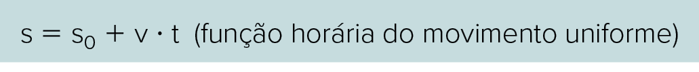

Os valores apresentados são calculados para uma pessoa adulta com 80 kg de massa.
Vilmos Varga/Shutterstock.com
Os metais e a saúde humana
Os íons metálicos são necessários para muitas das funções vitais do organismo humano. A ausência de alguns deles pode ocasionar sérias doenças, tais como: anemia, por deficiência de ferro; retardamento do crescimento de crianças, por falta de zinco; e má-formação óssea em crianças, por falta de cálcio. Alguns metais e semimetais, por sua vez, quando presentes no organismo humano, podem causar intoxicações. São exemplos clássicos: o arsênio, o chumbo, o cádmio e o mercúrio. [...]
Tratando-se particularmente dos metais e de suas funções no corpo humano, destaca-se o cálcio, presente nas estruturas ósseas e no esmalte dos dentes, na forma de hidroxiapatita, Ca5(PO4)3(OH). O sódio e o potássio contribuem para o balanço osmótico em membranas celulares, e o ferro está presente na estrutura de uma molécula conhecida como hemoglobina, responsável pela absorção e transporte de oxigênio no sangue. [...]
A falta ou o excesso de metais ou de quaisquer outros elementos químicos pode ser prejudicial à saúde. Ou seja, um desequilíbrio na concentração de alguns desses elementos pode levar a pessoa à morte. Como manter, então, o equilíbrio e o bom funcionamento do nosso corpo sem acúmulo ou escassez dos elementos essenciais? A resposta é, evidentemente, muito simples, e por muitos já conhecida: basicamente, com uma alimentação balanceada. [...]
MASSABNI, Antônio Carlos. “Os metais e a saúde humana”. Química viva – Conselho Regional de Química – IV Região, jul. 2006. Disponível em: www.crq4.org.br/default.php?p=texto.php&c=quimica_viva__os_metais_e_a_saude_humana&p=texto.php&c=quimica_viva__os_metais_e_a_saude_humana. Acesso em: 20 ,jul. 2021.
- Cada elemento químico tem uma função em nosso organismo. O que caracteriza um elemento químico?
- O texto explora vários íons metálicos. Caso o elemento químico estivesse na forma de átomo em vez de íon, haveria diferença?
Neste capítulo serão abordadas as habilidades EM13CNT104 e EM13CNT303.
Composição do átomo
Atualmente, sabemos que o átomo é constituído de duas partes: uma região central minúscula, que possui praticamente toda a massa do átomo, chamada de núcleo; e outra área maior, onde ficam os elétrons, denominada eletrosfera. No núcleo do átomo, encontramos os prótons e os nêutrons. Os primeiros têm carga positiva; e os elétrons, carga negativa. Os nêutrons ajudam a minimizar a repulsão entre os prótons que estão no núcleo.
Conhecer as partículas que compõem o átomo é essencial para entendermos como a matéria é constituída, de que modo os átomos se ligam para formar substâncias, as características de cada elemento, as reações químicas e nucleares, além de vários outros assuntos que envolvem a Química.
Representando os átomos
O átomo é considerado uma partícula eletricamente neutra, pois tem suas cargas positivas e negativas equivalentes, ou seja, apresenta o mesmo número de prótons, no núcleo, e de elétrons, na eletrosfera. Atualmente, o átomo pode ser representado pelo símbolo de seu elemento químico formado por uma ou duas letras. Essa representação está presente na tabela periódica, a qual vamos estudar mais adiante, na unidade 2.
Para representar adequadamente um átomo e entender as informações contidas na tabela periódica, precisamos conhecer algumas informações sobre ele, como o número de prótons, o número de massa, a quantidade de nêutrons e a quantidade de elétrons.
Número atômico
O número atômico corresponde ao número de prótons presentes no núcleo de cada elemento químico.
Z 5 p
Sendo o átomo eletricamente neutro, ou seja, apresentando o mesmo número de prótons e de elétrons, tem-se:
Z 5 p 5 e2
Elemento químico
Todos os átomos de um elemento químico possuem um valor característico para seu número atômico, que os identifica no sistema periódico. Desse modo, podemos definir elemento químico como um conjunto de átomos de mesmo número atômico.
Os elementos químicos são representados por uma letra maiúscula, e, se necessário, é acrescentada uma segunda letra, minúscula, a fim de evitar a duplicidade dos símbolos. Assim, para representar os átomos de carbono, cálcio e cobalto, por exemplo, escrevemos os símbolos C, Ca e Co, respectivamente.
Na tabela a seguir, temos exemplos de alguns elementos, seus símbolos e a origem destes.
| Exemplos de elementos químicos, seus símbolos e a origem destes | ||
|---|---|---|
| Nome do elemento | Símbolo do elemento | Origem do símbolo |
| Prata | Ag | Do latim “argentum” |
| Ouro | Au | Do latim “aurum” |
| Hélio | He | Do grego “helius” |
| Sódio | Na | Do latim “natrium” |
| Chumbo | Pb | Do latim “plumbum” |
| Enxofre | S | Do latim “sulfur” |
Uma letra pode fazer toda a diferença. As representações Co e CO são bem diferentes: Co: representa o átomo do elemento cobalto. CO: representa uma molécula de monóxido de carbono, composta de carbono (C) e oxigênio (O).
Número de massa
Conforme vimos, praticamente toda a massa do átomo está concentrada no núcleo deste. Assim, podemos definir número de massa (A) de um elemento como a soma das massas dos seus prótons e nêutrons. Por convenção, associamos ao próton e ao nêutron o valor de massa igual a 1.
A 5 p 1 n
A Iupac (International Union of Pure and Applied Chemistry) recomenda que, para representar o átomo de um elemento químico qualquer (aqui vamos representá-lo por X), o número de massa deve aparecer no canto superior esquerdo, e o número atômico, no canto inferior esquerdo, conforme podemos observar a seguir.
CPS-SP 2018 Um fogo de artifício é composto basicamente por pólvora (mistura de enxofre, carvão e salitr e por um sal de um elemento determinado, por exemplo, sais de cobre, como CuCL2, que irá determinar a cor verde azulada da luz produzida na explosão. https://tinyurl.com/ybcuml9u Acesso em: 15.11.2017.
Observe as representações dos elementos enxofre e cobre presentes em um fogo de artifício: e .A partir da análise dessas representações, assinale a alternativa que apresenta, respectivamente, o número de massa do enxofre e o número de nêutrons do cobre.
- 32 e 29.
- 32 e 35.
- 16 e 29.
- 16 e 35.
- 16 e 64.
Resposta
Resolução:Alternativa: B De acordo com a representação utilizada pela Iupac, representamos um elemento químico X do seguinte modo: , sendo A o número de massa e Z o número atômico.
Representando os íons
Já vimos que um átomo tem número de prótons igual ao de elétrons, uma vez que os prótons e os elétrons têm cargas de mesma intensidade com sinais contrários. Os elétrons, por estarem na parte mais externa do átomo, podem ser retirados ou inseridos na eletrosfera deste. Quando um átomo perde ou recebe elétrons, ocorre um desequilíbrio na quantidade de cargas. Ao átomo que perdeu ou ganhou elétrons damos o nome de íon.
Um átomo, ao perder elétrons, torna-se um íon com carga positiva, denominando-se cátion; ao ganhar elétrons, torna-se um íon com carga negativa, recebendo o nome de ânion.
Comparando os números atômico, de massa e de nêutron de um íon com seu átomo neutro, a única diferença que notaremos será o número de elétrons.
Veja alguns exemplos:
Resumidamente, teremos:

IFSul-RS 2017 Os isótopos radioativos do cobalto apresentam grande importância na medicina, sendo utilizados na destruição de células cancerosas. O isótopo na forma de cátion bivalente apresenta os seguintes números de prótons, elétrons e nêutrons, respectivamente:
- 27 – 27 – 35.
- 27 – 25 – 33.
- 60 – 29 – 33.
- 60 – 27 – 35.
Resposta
Resolução:Alternativa b O cátion cobalto bivalente é o íon de cobalto que possui carga positiva de valor 2. Assim, esse cátion ficará representado por: .Logo, teremos:p 5 27e2 5 25 (cátion bivalente perde 2e2)n 5 A 2 Z 5 60 2 27 5 33
Semelhanças atômicas
Estudamos que o número atômico é o responsável pela caracterização dos diferentes elementos químicos. Átomos com igual número atômico pertencem ao mesmo elemento. Mas será que todo átomo com o mesmo número atômico terá número de massa igual? E átomos com massas iguais podem ser de elementos diferentes?
Isótopos
Átomos de um mesmo elemento químico (portanto, Z igual) podem ter números de massa (A) e de nêutrons (n) diferentes. Eles são chamados de isótopos (do grego “iso” 5 “mesmo” e “topos” 5 “lugar”, referindo-se ao fato de que os isótopos ocupam a mesma posição na tabela periódica.
O elemento carbono, por exemplo, possui diversos isótopos conhecidos, dos quais dois são muito mais abundantes na natureza que os outros. Observe a tabela a seguir.
| Isótopos do elemento QUÍMICO carbono e suas abundâncias | ||||
|---|---|---|---|---|
| Símbolo | Número atômico | Número de nêutrons | Número de massa | Abundância na natureza |
| 12C (carbono-12) | 6 | 6 | 12 | 98,9% |
| 13C (carbono-13) | 6 | 7 | 13 | 1,1% |
| 14C (carbono-14) | 6 | 8 | 14 | traços* |
* Em Química, a expressão traços significa “vestígios”, “quantidades muito pequenas”.
Os isótopos de determinado elemento químico podem ser representados de duas formas: utilizando o nome do elemento químico e seu número de massa (por exemplo, carbono-12, carbono-13 e carbono-14); ou usando o símbolo do elemento químico com o seu número de massa (por exemplo, 12C, 13C e 14C). Em relação ao elemento hidrogênio, há uma nomenclatura específica para cada um dos isótopos:
Todos apresentam o mesmo número de prótons (p 5 1).
Isóbaros
Átomos de dois ou mais elementos químicos que têm o mesmo número de massa (A) e diferentes números atômicos (Z) e de nêutrons (n) recebem o nome de isóbaros (do grego “iso” 5 “mesmo” e “baros” 5 “peso”, referindo-se ao fato de que os isóbaros têm a mesma massa.
Ambos apresentam igual número de massa (A 5 40).
Isótonos
Átomos de dois ou mais elementos químicos que têm o mesmo número de nêutrons (n) e diferentes números atômicos (Z) e de massa (A) são denominados isótonos (do grego “iso” 5 “mesmo” e “tonos” 5 “força”, referindo-se ao fato de que os nêutrons são responsáveis pelas forças de coesão do núcleo).
e
Todos apresentam o mesmo número de nêutrons (n 5 7).
FEI-SP São dadas as seguintes informações relativas aos átomos X, Y e Z:I. X é isóbaro de Y e isótono de Z.II. Y tem número atômico igual a 56, número de massa 137 e é isótopo de Z.III. O número de massa de Z é 138.O número atômico do elemento X é:
- 53.
- 54.
- 55.
- 56.
- 57.
Resposta
Resolução:Alternativa: C Com base nas informações dadas, podemos fazer o seguinte esquema:Como X e Y são isóbaros, a 5 137.Como Y é isótopo de Z, c 5 56.Como X e Z são isótonos, a 2 b 5 138 2 c. Substituindo, teremos 137 2 b 5 138 2 56, b 5 55.
Isoeletrônicos
Recebem esse nome átomos e íons que apresentam o mesmo número de elétrons (e2) e diferentes números atômicos (Z), de massa (A) e de nêutrons (n).
, e
Todos têm o mesmo número de elétrons (e25 10).
1
Escreva a quantidade de prótons (p), nêutrons (n) e elétrons (e2) para cada uma das espécies a seguir. p: ____ n: ____ e2:____ p: ____ n: ____ e2:____c p: ____ n: ____ e2:____ p: ____ n: ____ e2:____ p: ____ n: ____ e2:____ p: ____ n: ____ e2:____
2
O que são íons? Como se formam?
3
Considere três átomos, A, B e C, e as afirmações feitas a respeito deles.
- A tem número atômico igual a 20, é isóbaro de B e isótono de C.
- B tem número de massa igual a 44, número de prótons igual a 21 e é isótopo de C.
Calcule x (número de massa de A), y (número de massa de C) e z (número atômico de C).
4
Um ânion de carga 12 possui 36 elétrons e 45 nêutrons. O átomo neutro que o originou apresenta qual número atômico e qual número de massa?.
5
Sobre as propriedades do íon cloreto (3717CL2), marque (V) para verdadeiro ou (F) para falso.
( ) Contém 16 elétrons.
( ) Tem 20 nêutrons.
( ) Tem número de massa igual a 35.
( ) Apresenta número atômico igual a 18.
A sequência correta, de cima para baixo, é:
- F – V – F – F
- F – F – V – F
- F – F – V – V
- V – V – F – F
6
Os átomos A e B são isótopos tais que e . Determine os números de massa e de prótons de A e B.
7
Enem Os núcleos dos átomos são constituídos de prótons e nêutrons, sendo ambos os principais responsáveis pela sua massa. Nota-se que, na maioria dos núcleos, essas partículas não estão presentes na mesma proporção. O gráfico mostra a quantidade de nêutrons (N) em função da quantidade de prótons (Z) para os núcleos estáveis conhecidos.
KAPLAN, I. Física Nuclear. Rio de Janeiro: Guanabara Dois, 1978 (adaptado).
O antimônio é um elemento químico que possui 50 prótons e possui vários isótopos – átomos que só se diferem pelo número de nêutrons. De acordo com o gráfico, os isótopos estáveis do antimônio possuem:
- entre 12 e 24 nêutrons a menos que o número de prótons.
- exatamente o mesmo número de prótons e nêutrons.
- entre 0 e 12 nêutrons a mais que o número de prótons.
- entre 12 e 24 nêutrons a mais que o número de prótons.
- entre 0 e 12 nêutrons a menos que o número de prótons.
1
Fatec-SP 2017 Cinco amigos estavam estudando para a prova de Química e decidiram fazer um jogo com os elementos da Tabela Periódica:
- cada participante selecionou um isótopo dos elementos da Tabela Periódica e anotou sua escolha em um cartão de papel;
- os jogadores Fernanda, Gabriela, Júlia, Paulo e Pedro decidiram que o vencedor seria aquele que apresentasse o cartão contendo o isótopo com o maior número de nêutrons.
Os cartões foram, então, mostrados pelos jogadores.
Observando os cartões, é correto afirmar que o vencedor foi:
- Júlia.
- Paulo.
- Pedro.
- Gabriela.
- Fernanda.
2
UTFPR 2017 Em 2016 a União Internacional de Química Pura e Aplicada (Iupa) confirmou a descoberta de mais quatro elementos, todos produzidos artificialmente, identificados nas últimas décadas por cientistas russos, japoneses e americanos, e que completam a sétima fila da tabela periódica. Eles se chamam Nihonium (símbolo Nh e elemento 113), Moscovium (símbolo Mc e elemento 115), Tennessine (símbolo Ts e elemento 117) e Oganesson (símbolo Og e elemento 118). As massas atômicas destes elementos são, respectivamente, 286, 288, 294, 294. Com base nas afirmações acima, assinale a alternativa correta.
- Esses elementos são representados por

- Os elementos Tennessine e Oganesson são isóbaros.
- Estes elementos foram encontrados em meteoritos oriundos do espaço.
- Os elementos Tennessine e Oganesson são isótopos.
- Os quatro novos elementos são isótonos entre si.
3
Col. Naval-RJ 2017 O elemento químico AL (alumínio), largamente utilizado em utensílios domésticos, tem número atômico 13, número de massa 27, e seu íon AL31 é muito utilizado no solo.Assinale a opção que apresenta, respectivamente, o número de prótons, elétrons e nêutrons presentes no íon AL31.
- 10, 10, 14
- 13, 13, 27
- 10, 10, 27
- 13, 16, 14
- 13, 10, 14
4
IFMG 2017 A água de coco é um isotônico natural de sabor muito agradável consumido por atletas de corrida de rua. Sua constituição é variada, apresentando carboidratos, vitaminas e sais minerais de cálcio (), magnésio (), potássio () e sódio ().Considerando os metais na sua forma iônica, a soma do número de elétrons de todos os íons citados é igual a:
- 56
- 62
- 100
- 106
5
UFRGS 2017 No planeta Qo’noS, os elementos químicos são idênticos aos nossos, com nomes diferentes. Os cientistas desse planeta acabaram de descobrir um elemento por eles denominado incognitum, que tem, entre suas características:
- tendência a perder dois elétrons ao formar compostos;
- núcleo com quantidade muito maior de nêutrons em relação aos prótons.
Incognitum corresponde ao elemento: Dados:
- Sc.
- Ba.
- Nb.
- Ca.
- Se.
6
IFMG 2017 As medalhas de ouro das Olimpíadas do Rio de Janeiro foram feitas a partir da mistura de ouro e prata, sendo esta majoritária.Considerando as partículas constituintes desses metais, foram feitas as afirmações seguintes.
- I. A prata possui 47 elétrons.
- II. A massa atômica da prata é igual a 155 u.
- III. O número de prótons e elétrons do ouro é idêntico.
- IV. A diferença entre o número de nêutrons do ouro e da prata é igual a 32.
- 1
- 2
- 3
- 4
7
Udesc 2016 Na Inglaterra por volta de 1900, uma série de experimentos realizados por cientistas, como Sir Joseph John Thompson (1856-1940) e Ernest Rutherford (1871-1937), estabeleceu um modelo do átomo que serviu de base à teoria atômica. Atualmente, sabe-se que três partículas subatômicas são os constituintes de todos os átomos: próton, nêutrons e elétrons. Desta forma, o átomo constituído por 17 prótons, 18 nêutrons e 17 elétrons possui número atômico e número de massa, sequencialmente, igual a:
- 17 e 18.
- 34 e 52.
- 17 e 17.
- 17 e 35.
- 35 e 17.
8
PUC-Campinas 2016 Durante a fusão nuclear que ocorre no Sol, formam-se átomos de hélio . Esse átomo possui:
- 2 prótons e 2 nêutrons.
- 2 prótons e 4 nêutrons.
- 2 prótons e nenhum nêutron.
- 4 prótons e 2 nêutrons.
- 4 prótons e nenhum nêutron.
9
IFMG 2016 A glicose é um carboidrato muito importante para o funcionamento das células. Sua composição química pode ser representada pela fórmula .Em uma molécula desse carboidrato, a quantidade de prótons existente é:
- 3
- 24
- 96
- 180
10
UTFPR 2016 O chumbo é um metal tóxico, pesado, macio, maleável e mau condutor de eletricidade. É usado na construção civil, em baterias de ácido, em munição, em proteção contra raios X e forma parte de ligas metálicas para a produção de soldas, fusíveis, revestimentos de cabos elétricos, materiais antifricção, metais de tipografia, etc. No chumbo presente na natureza, são encontrados átomos que têm em seu núcleo 82 prótons e 122 nêutrons (Pb-204), átomos com 82 prótonse 124 nêutrons (Pb-206), átomos com 82 prótons e 125 nêutrons (Pb-207) e átomos com 82 prótonse 126 nêutrons (Pb-208). Quanto às características, os átomos de chumbo descritos são:
- alótropos.
- isômeros.
- isótonos.
- isótopos.
- isóbaros.
11
EsPCEx-SP 2015 Considere dois elementos químicos cujos átomos fornecem íons bivalentes isoeletrônicos, o cátion X21 e o ânion Y22. Pode-se afi rmar que os elementos químicos dos átomos X e Y referem-se, respectivamente, a:
- 20Ca e 34Se.
- 38Sr e 8O. c
- 38Sr e 16S.
- 20Ca e 8O.
- 20Ca e 16S.
12
UEPG-PR 2015 Com relação à estrutura dos átomos e suas características, assinale o que for correto.Dados: Fe (Z 5 26); Ca (Z = 20); K (Z 5 19).
- 01. Um átomo neutro de N (Z 5 7), ao se transformar no ânion N32, apresentará 7 prótons e 4 elétrons.
- 02. A soma do número de prótons (p) e o número de nêutrons (n) é o número de massa (A).
- 04. O átomo de Ca apresenta Z 5 20 e 20 nêutrons e o átomo de K apresenta Z 5 19 e 21 nêutrons. Estes átomos podem ser considerados isótonos.
- 08. Os átomos 5B11 e 6C12 são considerados isótopos.
- 16. O átomo de Fe apresenta 26 prótons e, portanto o seu número atômico é 26.
Soma:
13
Uerj 2015 Com base no número de partículas subatômicas que compõem um átomo, as seguintes grandezas podem ser definidas:
| Grandeza | Símbolo |
|---|---|
| Número atômico | Z |
| Número de massa | A |
| Número de nêutrons | n |
| Número de elétrons | e2 |
O oxigênio é encontrado na natureza sob a forma de três átomos: 16O, 17O e 18O. No estado fundamental, esses átomos possuem entre si quantidades iguais de duas das grandezas apresentadas. Os símbolos dessas duas grandezas são:
- Z e A.
- e2 e n.
- Z e e2.
- n e A.
14
FGV 2015 O Brasil inaugurou em 2014 o Projeto Sirius, um acelerador de partículas que permitirá o desenvolvimento de pesquisa na área de materiais, física, química e biologia. Seu funcionamento se dará pelo fornecimento de energia a feixes de partículas subatômicas eletricamente carregadas: prótons e elétrons.
(http://www.brasil.gov.br/ciencia-e-tecnologia/2014/02/. Adaptado)
Na tabela, são apresentadas informações das quantidades de algumas partículas subatômicas para os íons X22 e A21:
| Carga da partícula | X22 | A21 |
|---|---|---|
| Positiva | 16 | y |
| Negativa | 18 | 18 |
Nessa tabela, o nome do elemento X e o valor de y são, respectivamente:
- argônio e 16.
- argônio e 20.
- enxofre e 16.
- enxofre e 18.
- enxofre e 20.